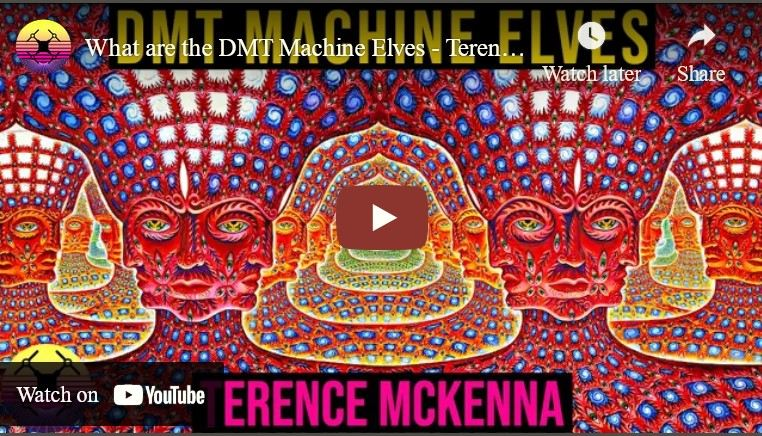

Terence McKenna : DMT 摂取による「機械妖精」体験を語る：全文＋日本語訳
 (静止画)
前置き
Terence McKenna の DMT 摂取による「機械妖精（ Machine Elves）との遭遇体験」はよく知られており、過去記事でも何度か紹介してきた。
今回は彼自身がその体験を詳しく語った動画（音声のみ）を取り上げ、その発言の全文と日本語訳を記録しておく。ついでに彼のこの主張に対する私の見解を述べる。
Terence McKenna の主張の核
Terence McKenna のタイトルの件に関する主張を 3行に要約すると次のようになる。
・(a) （他の恒星系の宇宙人とは別に）知的生命体が存在する未知の領域が存在する。
・(b) シャーマンはそれらの「未知に領域に存在する知的生命体」と独自の技法によって古来から交流してきた。
・(c) DMT はシャーマンではない普通の人間が「人間以外の知的生命体」(Machine Elves もそれに含まれる)と手軽かつほぼ確実に交流できる扉を開く。
Terence McKenna の核となる主張の箇所
▼展開
世界は私たちが思っているようなものではありません。 DMTの素晴らしいところは、未解決とされていたある疑問を解決してくれることです。 例えば、私たちが想定している疑問の1つに、「この宇宙は1つだけなのか、それとも違うのか」というものがありますよね。 答えは「ノー」です。 これで決着がつきました。 人間以外の知的生命体は存在するのか？ 答えは、はい、あります。 (00:07:58) イギリスの大麦畑がどうとか、ホイットリー・ストリーバーがどうとか、そんなことは知らないが、この薬の中、この植物化合物の中には、実体がある。 (00:08:14) -------------- そして、彼らは私たちに気づかないわけではありません。 扁形動物でもペリカンでもない。 彼らは知的です。 彼らは、私たちと同じクラスの存在、知的な存在なのです。 さて、では質問です。昨晩もいくつか触れました。 この人たちは誰なのか？ 死者なのか？ それは大きなニュースです。 あの世のミニーおばさんと コンタクトできる薬？ (00:08:47) どうするんだろう、これってナショナル・エンクワイアラー的な話だよね。 キノコのすごいところは、ユニークなところは、彼らが話すことです。 彼らは英語を話す。 彼らはあなたに話しかけます。 質問に答えてくれる。 質問に答えたり、会話を続けたり、いろいろなことをします。 私の経験では、このような話し方をするものは他にありません。 つまり、ある種の気違いじみた旅行の絶頂期や、短期間の何か、あるいは他のものがあるかもしれない。 (00:09:17) しかし、シロシビンはポーチに椅子を引いて足を乗せるだけなんだ、ね。 そしてアヤワスカは、少なくとも私の経験では、そのようなことはしません。 アヤワスカの言語は視覚的なものです。 頭の前がシネマスコープカメラのようになるのです。 5時間くらいアヤワスカに浸っていると、目玉が頭から飛び出してくるような感覚になります。 つまり、お金を持ってマディソン・アベニューに行くようなものなのです。 (00:09:51) あなたは多くのことを見てきました、ただ見て、見て、見て、これを見て、これを見てください。 つまり、見すぎて目が痛くなるのです。このように視覚的な言語で語りかけてくるのに、ほとんど音を立てず、確かに言語的な音はありません。 そしてもちろん、DMTの最も驚くべき、恐ろしい、決定的な特徴は、私も含めて多くの人が、ある種の知的生命体が絶対的に群がっている場所に飛び込んでしまうということだ、と述べておくべきだった。 (00:10:33) つまり、自己変身するエルフマシーンと呼んでいるのです。 間違いなくエルフの場所です。 白い光に包まれるかと思えば、ハクスリー的な「形と空」のアフォリズムに触れるかと思えば、そうではなく、ハイパースペースの箒置き場に侵入した16人のエルフが服の中に入ろうとするんだ。 とても奇妙なことです。私の個人的なモデルは、このすべてが一連の同心円状の殻であり、DMTフラッシュはより深いレベルであり、すべてのサイケデリック体験は、このエルフに囲まれたドーム状の逆光空間に通じていると本当に考えています。 (00:11:29) ほとんどのサイケデリックは、そこに到達することができないか、あるいは、そのような混乱した状態で到達してしまうので、降りてきたときには、その旅行の部分の記憶がないのです。 多くの人は、DMTでその場所に行き、その部分の記憶がないまま降りてくると思います。エルフの部族に遭遇したその瞬間、あなたの選択はかなり厳しいものになるからです。 (00:11:57)
コメント
Terence McKenna の主張する
・(a) （他の恒星系の宇宙人とは別に）知的生命体(X) が存在する未知の領域が存在する。
・(b) シャーマンはそれらの「未知に領域に存在する知的生命体(X)」と独自の技法によって古来から交流してきた。
・(c) DMT はシャーマンではない普通の人間が X と手軽かつほぼ確実に交流できる扉を開く。
の b と c は完全に間違っている。X は（現象としては）幻覚であり、（宗教的・神秘主義的概念としては）虚構であって、実在しない。a は客観的な証拠が何もない。
X が「未知の領域に実在する知的生命体」なら、人間の思考の枠外、もしくは超越している点が見つかる筈だが、そのような気配はほぼ皆無。人間のもつ未熟な精神性（愚かさ、嫉妬、妬み、怒り、傲慢、身勝手な欲望）と、その単純な裏返しとしての虚構の超越性（全能、全知、完全な愛、限りなき慈悲…の類）が X にもそのまま受け継がれている。
シャーマンや霊能者の語る内容はその地域の俗習をそのまま反映し、地域性のシガラミから脱することはまずない。旧・新の聖書、仏典、クルアーン…これらでさえそれらの教えが作成された当時の地域性・時代性の枠内、人間の思考の枠内にキッチリと収まっている。
つまり、シャーマンや霊能者が、独自の技法によって古来から交流してきた X の正体は「制御された意識障害」が生み出した幻覚体験でしかない。つまり古来から受け継いできた伝統の轍に沿うような幻覚のみを体験するように意識障害がある程度まで制御されている。それゆえにインド由来のヒンズー教、仏教はカルマや解脱の概念を受け継いでいるし、ユダヤ教由来のそれは旧約聖書の基本思想を受け継いでいる。
一方で、DMT 摂取で体験するのは「制御されない意識障害」が生み出した幻覚ゆえ、伝統の轍からは外れた野放図の幻覚となる。
なぜ、管理された DMT 摂取実験によっても、（abductee が報告するのと同じ） グレイ型 ET やカマキリ型 ET に遭遇し、寝台で身体検査をうける体験が起きるのだろうか？
その理由は、本物の abductee の abduction 体験も、DMT 摂取による「未知に領域に存在する知的生命体」との遭遇体験も、同様の機序で発生しているため。
本物の abductee の abduction 体験は、（脳の損傷や EMF 異常による）「一時的な意識障害」によって引き起こされたもの。一方で、DMT 摂取による「未知に領域に存在する知的生命体」との遭遇体験は DMT による「一時的な意識障害」が引き起こしたもの。
「一時的な意識障害」という点で共通しているゆえに、幻覚の内容の一部も共通し、それが「グレイ型 ET やカマキリ型 ET 」との遭遇となったのだろう。
次に DMT が未知の存在領域の扉を開くという主張をより詳しく検討する。
DMT 摂取によって「人間の理解を超越した領域を垣間見た」と証言する人々が無数にいて、彼らのその証言に誇張も嘘もないのは理解している。だが、彼らはみな誤解している。
DMT 摂取によって「人間の理解を超越した領域を垣間見た」（と感じる）のは、
・DMT が「未知の存在領域の扉を開いた」
からではなく、
・DMT が脳の認知機能の枠組みそのものを大きく歪めた
ことが原因であるからに過ぎない。つまり DMT によって意識が正常な認知がなしえない状態に一時的に陥っただけなのだが、それを「人間の意識を超越した領域を垣間見た」と誤解しただけ。
あたかも色や形状が大きく歪む特殊なゴーグルを装着したことで、世界が日常世界から一変したかのように見えるようなもの。実際は、世界は何も変わらず、見る側の認知がフィルターによって歪んだだけ。
この「 DMT による超越」と全く同じ構図の錯覚を仏教徒や精神世界ファンもしている。後者は「深い瞑想/OBE/臨死体験/特殊な瞑想技法/タントラの技法/チベット密教/禅の公案/Gurdjieff の技法…等々 によって日常世界を超越しこの世界の奥底に潜む真理や、日常世界を超越した別世界を垣間見ることができるのだ」と錯覚している。
実際は、自分で自身の脳にダメージを与えて幻覚を引き起こしたり、正常な認知の枠組みを狂わせているだけなのだが、それを超越や悟り、神や菩薩との邂逅の類だと錯覚している。つまり、純然たる迷妄を悟りだと錯覚している。まさに倒錯そのもの。
蛇足：社会的なシガラミがあるので具体的に述べることは避けるが、上記の私の見解は何の経験もなしに憶測だけで述べているのではない。
Preston Dennett : OBE 中に亡き母に遭遇、母の案内で精妙な死後の世界を訪問 (2022-02-22)
音声(16:30)
What are the DMT Machine Elves - Terence McKenna
memo
Dec 14, 2021 #terencemckenna #dmt #machineelves The machine elves, according to Terence, are entities that one encounters when they consume the requisite amount of Dimethyltryptamine—or, more commonly, DMT.
Here is Terence’s description of the beings:
‘You pass through a membrane of some sort, and you’re in a place. You’re pushed through, and you see the tykes, as I call them. The self-transforming machine elves that are singing in a hyperdimensional language. They surround you and say, “Welcome, we’re so glad to see you.”’
Using language, Terence says, these elves transform themselves and the objects surrounding them, in a fluorescent playpen of hills and flashing lights. Upon hearing this, it’s easy to dismiss this description as mere drug-fuelled delusions, and they very well could be. However, what is perhaps most compelling about Terence’s description of these elves is that he’s not the only person to have encountered them.
Whisper AI(large-v2 model) + DeepL
I mean, how many people here have encountered non-human entities, or what appeared to be non-human entities, on a psychedelic? One, two, three, four, five, six, seven, eight, nine, ten, eleven, you know, more than half of us. Well, what do the other half of you think about that? I mean, well, something that, at first, second, and third glance, does not appear to be a non-human entity at all, like Aunt Minnie. (00:00:32)
In other words, if it's smaller than a bread box, or not made of matter, and it's talking to you, it's a safe bet it's a non-human entity of some sort, right? So those of you who haven't had this experience, see, the thing to put across is there's so much loose-headedness in the world, and this is really a stumbling block for psychedelicos, because we have people claiming to channel 11,000-year-old Central Asian herders who have a message for mankind, and we have people who are in contact with all kinds of entities with weird names, and so then the people who don't do psychedelics say, well, this is something that's like channeling, or all this other stuff. (00:01:19)
No, it isn't, because we are not like those people. I mean, I maintain this rigorously, that our bit is intellectual rigor, not air-headedness. We're willing to put as much pressure on the ideas as you want, we just believe in fairness, so that it's not ipso facto that there's no such thing as elves. It's that if you think there are elves, prove it to me. (00:01:48)
Then the problem is that the skeptic, the critic, says, well, the notion that there are elves is just, you know, you're sadly deluded, you're living in your own private Idaho. But then you say, well, the proof of the pudding is a 15-minute DMT trip. Are you willing to carry on this criticism after having made the experiment, sir? I mean, we're not like UFO enthusiasts, we're not telling you to stand in cornfields in the dead of night and pray. (00:02:19)
No, no, this will work. This will work on you, you, the reductionist, you, the doubter, you, the constipated, egomaniacal father-dominator. It'll work. And then they just, and they say at that point, you know, you are a menace, is what you are. The big news about psychedelics is that they're democratic, you know? And it's not like summoning flying saucers where you go to the same cornfield on eight successive nights and freeze your ass off and get nowhere. (00:02:58)
The thing to bear in mind is that this is on demand, you know? It is on demand. I mean, it's not 100% certain, but if it's 95% certain, this is big news. And what is it that is delivered on demand? Literally, the fulfillment and transcendence of our wildest dreams. Not the white light, not all any of these cheerful hypostatizations of Eastern religion, but you know, instead, thousands of overdressed elves pounding their way into your inner sanctum and squeaking at you in languages that are not scripted on this planet. (00:03:44)
What are we to make of such a thing? (00:03:47)
What are straight people to make of it? I mean, it's hard enough for heads to come to terms with this stuff. And I think we've dealt with it so far by just saying, well, heads are pathological people and we do not have to listen to what they report because anybody crazy enough to take one of these drugs on their own without expert psychiatric supervision can't be trusted anyway. (00:04:12)
Well, this is just nonsense. This is, what is really going on is a continuing insistence on an expression of shamanic forms. That people will not let the world's oldest religion die. And it is more than drumming, fasting, humming, whistling, and all that. For my money, it centralizes on some kind of technique for creating a rupture of plane, an ecstatic experience, an inflow of information that is completely unexpected. (00:04:52)
I mean, to me, the world divides into two kinds of people. People who know that this is possible, and people who either don't know or if it's suggested to them, deny it, absolutely. You can go from birth to the grave and never come near this, never have an inkling. And most people do. But that is not, to my mind, a proper use of the opportunity afforded by human existence. (00:05:30)
To my mind, the purpose of human existence is to try and figure out a way in, out, over, up, somewhere. In other words, we come out of an unguessable abyss who knows what it is, what we came from. And we go into death, about which we know practically nothing. We have a few cheerful stories to ease us on the way, but who would want to make a bet on all of that? (00:06:01)
So what you have is suspended between eternities, a moment, 45, 55, 75 years, in which you can sit on your can, or you can subscribe to one of these pre-packaged religions that gives you all the answers and probably sets you up for a lot of sexual repression, or you can say, my God, I'm alive, apparently I've awakened in the control room of reality. (00:06:35)
And if I could just figure out what these buttons and levers are, I could do something profound, interesting, worthy. I went into, nobody was more hard-boiled than I. I mean, I was an existentialist in the Sartian mold, and it didn't keep the elves from approaching me. So I have been concerned to inform UFO people, Jungian psychologists, spiritual seekers, that this tremendously powerful tool lies present at hand. (00:07:22)
Curiosity pushed far enough will hit the jackpot. The world is not as we suppose. The great thing, you see, about DMT is that it settles certain questions assumed to be open. You know, like, one question we all assume to be open is, well, is this the only universe or not? Answer, no. That settles that. Are there intelligent entities of a non-human sort? Answer, yes, there are. (00:07:58)
I don't know what they have to do with busted-up barley fields in England or, you know, Whitley Streber's problems, but inside this drug, inside this plant compound, there are entities. (00:08:14)
And they are not oblivious to us. They're not flatworms or pelicans. They are intelligent. They are of the same class of being as we are, an intelligent being. Okay, well, then there are questions, some of which I mentioned last night. Who are these people? Are they the dead? That would be big news. A drug that allows you to contact Aunt Minnie in the afterlife? (00:08:47)
I don't know how we would, you know, this is National Enquirer stuff. The amazing thing about the mushrooms, the unique thing about them is that they speak. They speak English. They talk to you. They will answer questions. They will carry on conversations, so forth and so on. No other thing in my experience speaks not like that. I mean, there may be some at the height of some crazed trip, some brief something or other. (00:09:17)
But Psilocybin just pulls up a chair on the porch and puts its feet up, you know. And ayahuasca does not do that, at least in my experience. The language of ayahuasca is visual. The front of your head becomes like a cinemascopic camera. After a good five-hour ayahuasca trip, you just feel like your eyes must be bugging out of your head. I mean, it's like going to Madison Avenue with money. (00:09:51)
You have done so much looking, just look, look, look, look at this, look at this. I mean, your eyes hurt from so much looking because it speaks to you in this visual language, and it barely ever makes a sound, and certainly no linguistic sound. So why these things have this different presentation, and then, of course, the thing about DMT that I should have mentioned that is the most astonishing, appalling, and the definitive characteristic is that for a lot of people, myself included, you burst into a place that is absolutely swarming with some kind of intelligent life. (00:10:33)
I mean, I call them self-transforming elf machines. It's definitely an elf place. You thought you were going to get the white light, or you thought you were going to get a Huxley-esque aphorism on form and void, and no, you got 16 elves trying to climb inside your clothes in this broom closet in hyperspace that you've broken into. It's very odd, and my personal model of all this is that it's a series of concentric shells, and I really think that the DMT flash is the deeper level, that all psychedelic experiences lead into this elf-infested, dome-like, backlit space. (00:11:29)
Most psychedelics can't quite carry you there, or they carry you there in such a state of discombobulation that when you come down, you have no memory of that part of the trip. A lot of people, I think, go to that place on DMT and come down with no memory of that part of the trip, because at that moment when you encounter this tribe of elves, your choices are pretty stark. (00:11:57)
You have to either immediately jettison everything you've ever believed about reality, or you have to immediately embrace the idea that you are now absolutely crackers. (00:12:14)
つまり、ここにいる何人の人が、サイケデリックで人間ではない存在、あるいは人間ではない存在と思われるものに遭遇したことがあるのでしょうか？ 1、2、3、4、5、6、7、8、9、10、11人、ほら、半分以上はそうでしょう。 残りの半分の人はどう思う？ つまり、まあ、一度目、二度目、三度目に見たときに、まったく人間以外の存在に見えないもの、例えばミニーおばさんとか。 (00:00:32)
つまりパン箱より小さかったり、物質で出来ていなかったり、そしてあなたに話しかけてくるなら、それは何らかの人間ではない存在である事は間違いないんじゃないかしら？ このような経験をしたことがない人は、ほら、世の中には頭の固い人がたくさんいます。これはサイケデリックな人たちの障害になっています。1万1000年前の中央アジアの牧民が人類へのメッセージを持っていると主張する人たちがいて、奇妙な名前のあらゆる種類の存在と接触している人がいます。 (00:01:19)
いいえ、そうではありません、私たちはそういう人たちとは違うのですから。 つまり、私はこれを厳格に維持しています。私たちのビットは知的厳密さであり、空気を読まないことではありません。 私たちは、あなたが望む限り、アイデアに圧力をかけることを厭いません。私たちは公正さを信じているので、エルフなど存在しないという事実にはなりません。 エルフがいると思うなら、それを証明してくれということです。 (00:01:48)
問題は、懐疑論者、批判者が、エルフがいるという考え方は、悲しいかな妄想であり、あなたは自分だけのアイダホの中で生きているのだ、と言うことです。 でも、その証拠に、15分のDMTの旅があるじゃないか、と言うわけです。 実験をした後で、この批判を続ける気はありますか、先生？ つまり、私たちはUFOマニアと違って、真夜中にトウモロコシ畑に立って祈れとは言わないんですよ。 (00:02:19)
いやいや、これは効きますよ。 還元主義者のあなた、疑い深いあなた、便秘で自我の強い父親を持つあなた、そんなあなたに効くはずです。 うまくいくよ。 そして、彼らは、その時点で、あなたは脅威だ、と言うのです。 サイケデリックの大きな特徴は、民主的であることです。 空飛ぶ円盤を召喚するように、8日連続で同じトウモロコシ畑に行き、お尻を凍らせても何も得られないというようなことはない。 (00:02:58)
留意すべきは、これがオンデマンドである、ということだ。 オンデマンドなのです。 100％確実とは言えないが、95％確実なら、これはビッグニュースだ。 そして、オンデマンドで配信されるものとは何か。 文字通り、私たちの夢を叶え、超越することです。 白い光でもなく、東洋の宗教の陽気な偽作でもなく、その代わりに、何千人もの着飾った妖精たちが、あなたの内なる聖域を叩き、この惑星では台本にない言語であなたに語りかけます。 (00:03:44)
そんなものをどう捉えたらいいのだろう。 (00:03:47)
ノンケはどうすればいいんだ？ つまり、頭がこのようなことに折り合いをつけるのは大変なことなのです。 というのも、精神医学の専門家の監視なしに、自分で薬を飲むようなおかしな人は、どうせ信用できないからです。 (00:04:12)
まあ、これは単なるナンセンスです。 本当に起こっているのは、シャーマニズムの形を表現することへの継続的な主張なのです。 人々は、世界最古の宗教を死なせるつもりはないのです。 太鼓、断食、鼻歌、口笛、その他もろもろ以上のものです。 私の考えでは、それは平面の断絶、恍惚とした経験、まったく予期しない情報の流入を作り出すためのある種のテクニックに集中している。 (00:04:52)
つまり、私にとっては、世界は2種類の人間に分かれる。 それが可能だと知っている人、そして知らないか、示唆されても絶対に否定する人。 生まれてから墓場まで行っても、このことに触れることはなく、その兆候を感じることもないでしょう。 そして、ほとんどの人がそうです。 しかし、それは、私の考えでは、人間の存在によって与えられた機会の適切な使用ではありません。 (00:05:30)
私の考えでは、人間の存在の目的は、どこかに入る、出る、越える、上がる、道を見つけようとすることです。 言い換えれば、私たちは、それが何であるか、私たちが何から来たのかを知っている得体の知れない深淵から出てくるのです。 そして、私たちは、実質的に何も知らない死の中に入っていく。 その道中、私たちを和ませてくれるいくつかの明るい物語がありますが、誰がそのすべてに賭けをしたいと思うでしょうか。 (00:06:01)
つまり、あなたが持っているのは、永遠の間の宙吊り状態です。一瞬、45年、55年、75年。その間に、あなたは缶詰になるか、すべての答えを与えてくれる、おそらく多くの性的抑圧を受けることになる、あらかじめパッケージされた宗教の1つに加入するか、あるいは、神よ、私は生きています、どうやら私は、現実という制御室で目覚めたのだと言うことができるのです。 (00:06:35)
このボタンとレバーが何なのかが分かれば、何か深遠で、面白く、価値のあることができるかもしれない。 私は、私ほどハードボイルドな人間はいない、と思っていた。 つまり、私はサルティアンのような実存主義者だったのですが、それでもエルフが私に近づいてくることはありませんでした。 だから私は、UFOの人たち、ユング心理学者、スピリチュアルな探求者たちに、このとてつもなく強力なツールが手元にあることを伝えたいと考えてきた。 (00:07:22)
好奇心が十分に押し出されると、大当たりを引き当てます。 世界は私たちが思っているようなものではありません。 DMTの素晴らしいところは、未解決とされていたある疑問を解決してくれることです。 例えば、私たちが想定している疑問の1つに、「この宇宙は1つだけなのか、それとも違うのか」というものがありますよね。 答えは「ノー」です。 これで決着がつきました。 人間以外の知的生命体は存在するのか？ 答えは、はい、あります。 (00:07:58)
イギリスの大麦畑がどうとか、ホイットリー・ストリーバーがどうとか、そんなことは知らないが、この薬の中、この植物化合物の中には、実体がある。 (00:08:14)
そして、彼らは私たちに気づかないわけではありません。 扁形動物でもペリカンでもない。 彼らは知的です。 彼らは、私たちと同じクラスの存在、知的な存在なのです。 さて、では質問です。昨晩もいくつか触れました。 この人たちは誰なのか？ 死者なのか？ それは大きなニュースです。 あの世のミニーおばさんと コンタクトできる薬？ (00:08:47)
どうするんだろう、これってナショナル・エンクワイアラー的な話だよね。 キノコのすごいところは、ユニークなところは、彼らが話すことです。 彼らは英語を話す。 彼らはあなたに話しかけます。 質問に答えてくれる。 質問に答えたり、会話を続けたり、いろいろなことをします。 私の経験では、このような話し方をするものは他にありません。 つまり、ある種の気違いじみた旅行の絶頂期や、短期間の何か、あるいは他のものがあるかもしれない。 (00:09:17)
しかし、シロシビンはポーチに椅子を引いて足を乗せるだけなんだ、ね。 そしてアヤワスカは、少なくとも私の経験では、そのようなことはしません。 アヤワスカの言語は視覚的なものです。 頭の前がシネマスコープカメラのようになるのです。 5時間くらいアヤワスカに浸っていると、目玉が頭から飛び出してくるような感覚になります。 つまり、お金を持ってマディソン・アベニューに行くようなものなのです。 (00:09:51)
あなたは多くのことを見てきました、ただ見て、見て、見て、これを見て、これを見てください。 つまり、見すぎて目が痛くなるのです。このように視覚的な言語で語りかけてくるのに、ほとんど音を立てず、確かに言語的な音はありません。 そしてもちろん、DMTの最も驚くべき、恐ろしい、決定的な特徴は、私も含めて多くの人が、ある種の知的生命体が絶対的に群がっている場所に飛び込んでしまうということだ、と述べておくべきだった。 (00:10:33)
つまり、自己変身するエルフマシーンと呼んでいるのです。 間違いなくエルフの場所です。 白い光に包まれるかと思えば、ハクスリー的な「形と空」のアフォリズムに触れるかと思えば、そうではなく、ハイパースペースの箒置き場に侵入した16人のエルフが服の中に入ろうとするんだ。 とても奇妙なことです。私の個人的なモデルは、このすべてが一連の同心円状の殻であり、DMTフラッシュはより深いレベルであり、すべてのサイケデリック体験は、このエルフに囲まれたドーム状の逆光空間に通じていると本当に考えています。 (00:11:29)
ほとんどのサイケデリックは、そこに到達することができないか、あるいは、そのような混乱した状態で到達してしまうので、降りてきたときには、その旅行の部分の記憶がないのです。 多くの人は、DMTでその場所に行き、その部分の記憶がないまま降りてくると思います。エルフの部族に遭遇したその瞬間、あなたの選択はかなり厳しいものになるからです。 (00:11:57)
(00:11:57)現実についてこれまで信じてきたことを即座に捨てるか、自分が今まさにクラッカーであるという考えを即座に受け入れるか、どちらかである。 (00:12:14)
For me, it was an easy choice to make, but it causes anxiety in some people, and I want to learn from these things. They are not simply there observing you, they're waiting, almost holding a net, like firefighting personnel at the site of a disaster. They're waiting for you to come too, and then they start speaking in this language of the visibly beheld logos. (00:12:45)
This is where it is most concretely beheld, that these elves' things, which look like jeweled, self-dribbling basketballs or something, are all around you, and they sing, they make sound in these crystalline, high-pitched, warbling voices, and that condenses into the air as objects and words and other little beings. These things, they offer you, these objects, a single one of them. If it could be brought into this room and sat here, it would change the course of the world forever. (00:13:24)
It's like the sort of thing that they keep in the nurseries of flying saucers, you know? And they're offering these things to you at a ripping pace. I mean, they just say, look at this. You say, oh my God, it's just one. You say, no, forget that, look at this. You say, oh my God. These things are like Fabergé eggs of jewels and ivory and stone, but they're not made of jewels and ivory and stone. (00:13:52)
They're made of light and meaning and intentional humor and triple entendre, and it's a linguistic object, material, and they're saying, do this. We do this. You can do this. Make these things. And some of these little objects themselves begin to sing and make other objects. And this is all, what has happened is you have burst into the Hall of the Mountain King. These are the demon artificers. (00:14:21)
These are the elves making their trans-dimensional toys. Why? Hell, who knows why? Just to have arrived there is accomplishment enough. You can spend a lifetime sorting out why. But they seem to be the vector at the end of time. They are an anticipation of who is waiting. And if you know the pre-Socratic philosopher Heraclitus, the 52nd fragment of Heraclitus says, the Aeon is a child at play with colored balls. (00:14:58)
This is it, folks. Heraclitus saw the Aeon. The Aeon is a child at play with colored balls. And it's the Puerh at the end of time. It's this thing. It's so radiant that you can hardly look at it. I mean, it has intimations of death, eternity, transformation. And yet it's all going on in this weird dimension of humor. It's like a Bugs Bunny cartoon running at triple speed. (00:15:25)
And all of this action is taking place. This is a real place. And science denies its existence. If it weren't for the fact that you pay to hear me, the only category society has for what I have just told you is serious delusion. This man has a chronic pathological delusion. It appears harmless in the social context because it nowhere comes tangential to functioning in this society. (00:16:00)
But don't put a lot of pressure on him, obviously. (00:16:03)
The guy could snap at any moment. (00:16:10)
私にとっては簡単な選択でしたが、人によっては不安を煽るわけで、こういうところから学びたいものです。 彼らは単にそこであなたを観察しているのではなく、災害現場で消防隊員のように、ほとんど網を張って待っているのです。 彼らは、あなたが来るのを待っているのです。そして、目に見えるロゴという言語で話し始めるのです。 (00:12:45)
宝石をちりばめた、自分でドリブルするバスケットボールか何かのようなエルフの物たちが、あなたの周りにいて、彼らは歌い、この結晶のような、甲高い、うなり声で音を出し、それが物体や言葉や他の小さな存在として空中に凝縮されるということが、ここで最も具体的に見出されるのです。 これらのもの、彼らはあなたに提供します、これらのオブジェクト、そのうちの1つを。 もしそれがこの部屋に持ち込まれ、ここに座ることができたなら、それは世界の流れを永遠に変えるだろう。 (00:13:24)
空飛ぶ円盤の子供部屋に置いてあるようなものですよ。 そして、彼らはこれらのものを、破竹の勢いであなたに提供するのです。 つまり、彼らはただ、これを見てくださいと言うんだ。 あなたは、ああ、大変だ、1つだけだ、と言う。 いや、それは忘れて、これを見てください。 なんてことだ。 このようなものは、宝石と象牙と石でできたファベルジェの卵のようですが、宝石と象牙と石でできているわけではありませんよ。 (00:13:52)
光と意味と意図的なユーモアと三文芝居でできているのです。 私たちはこうしている。 あなたにもできる。 こういうものを作ってください。 そして、これらの小さなオブジェクトは、それ自体が歌い始め、他のオブジェクトを作り始めるのです。 これはすべて、あなた方が山王の館に飛び込んできたということです。 これが悪魔の造形師たちです。 (00:14:21)
これはエルフが超次元的な玩具を作っているのだ。 なぜだ？ 誰が知ってる？ そこにたどり着いただけで十分な達成感がある。 その理由は一生かけても解明できない。 しかし、彼らは時間の終わりのベクトルであるようだ。 彼らは、誰が待っているのかを予期しているのです。 ソクラテス以前の哲学者ヘラクレイトスを知っている人は、ヘラクレイトスの52番目の断片に、「イオンは色玉で遊んでいる子供である」と書いています。 (00:14:58)
皆さん、これです。 ヘラクレイトスはイオンを見たのです。 イオンは、カラーボールで遊んでいる子供だ。 そして、時の果てのプーアルです。 それは、このことです。 あまりの輝きに、見ていられないほどです。 つまり、死、永遠、変容を暗示しているのです。 しかも、そのすべてが奇妙なユーモアの次元で進行している。 バグス・バニーのアニメが3倍速で走っているようなものです。 (00:15:25)
そして、このすべてのアクションが行われている。 これは実在する場所なのです。 そして、科学はその存在を否定しています。 私の話を聞くためにお金を払うという事実がなければ、私が今話したことに対して社会が持つ唯一のカテゴリーは、深刻な妄想です。 この人は慢性的な病的妄想を抱えている。 社会的な文脈では無害に見えるが、それはこの社会で機能するために必要なことではないからだ。 (00:16:00)
しかし、彼に大きなプレッシャーをかけてはいけません、明らかに。 (00:16:03)
あいつはいつ切れてもおかしくない。 (00:16:10)
(2023-06-11)
初出
❑ Terence McKenna : DMT 摂取による「機械妖精」体験を語る：全文＋日本語訳 http://news21c.blog.fc2.com/blog-entry-21002.html (2023-06-11)